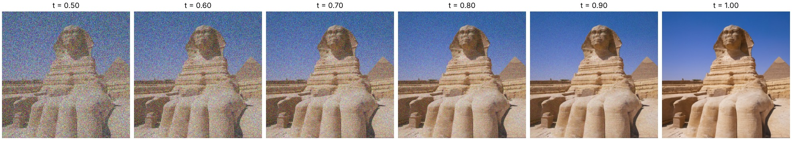

Part A. 1.1 Noisy inputs · 1.2 Gaussian blur · 1.3 One-step · 1.4 Velocity · 1.5 Euler · 1.6 From noise · 2.1 CFG · 3.1 Editing · 3.2 Text edits · 3.3 Anagrams · 3.4 Hybrids
Part B. 1.1 UNet · 1.2 Denoiser · 1.2.1 Training · 1.2.2 Out of distribution · 1.2.3 Pure noise · 2.1 Time conditioning · 2.2 Training · 2.3 Sampling · 2.4 Class conditioning · 2.5 Class training · 2.6 Class sampling
Part A: Exploring the Power of Flow Models
Part A 1.1: Constructing Noisy Training Inputs
Here, we simply follow the process as defined. We use linear interpolation to define xt = tx1 + (1-t)epsilon. We use epsilon = noise(SEED) to get a torch object of the same shape as image sampled from a normal distribution N(0, 1).
xt = t x1 + (1 − t) ε

Part A 1.2: Classical Denoising
Here, we want to carry out a thought experiment. Given a noisy image, how exactly can we denoise it? To answer this, and use the baseline presented to us, we need to first frame the problem correctly. Currently we have interpolated image pairs (xt, t) where we want a denoised version. To do this, we should first separate out clearly where the noise is coming from compared to the original image. We get
xt = t x1 + (1 − t) ε
xt / t = x1 + ((1 − t) / t) ε
Here x1’s contribution to the image is just itself. However, there is a certain addition of noise to the image, which we seek to denoise. How exactly do we denoise? As a baseline, we choose to average nearby pixels with a Gaussian blur.


Part A 1.3: One-Step Denoising
In this step, we want to conduct a one step denoising. Given a trained flow model that predicts a velocity vector to the original image, we can find x1 = xt + (1-t)v, where v is the direction of the original image x1 - epsilon, and epsilon is the noise. The model predicting v is also trained using t, which allows it to know which timestep it currently is at. Once we do this, we can plug in our values of xt, t, and c to find the one step denoising solution for each of our 3 images.
x̂1 = xt + (1 − t) vθ(xt, t, c)


Part A 1.4: Visualizing Velocity
In this part, we want to compare the ground truth and model predictions for the velocity. Starting from xt, we want to add an update to get to the original image. Using the equation from before, x1 = xt + (1-t)v, we get (1-t)v = x1 - xt. The difference is in where the velocity vector is pointing. For the ground truth, it is x1 (the original image) - epsilon (which is the initially added noise). As for the prediction of the model, we simply call predict_velocity(x_t, t, condition) for the answer. From here, we want to produce an output at each timestep that shows the corresponding values of xt, predicted update steps (1-t)v_hat and (1-t)v_gt, and the root mean squared error across all 3 color channels as a heatmap, to distinctly see how the two change across different timesteps and noised images.
The answer we see, is that at very low timesteps, the heatmap shows significantly more differences, with time t=0.25 showing more blue outlines at the edges of the sphinx. As we transition to t=0.5, the blue outlines fade, until t=0.75 where they are very faint, showing how as the original image has a larger share of the noised image, the differences in ground truth and predicted velocity get smaller.


Part A 1.5: Iterative Denoising with Euler Sampling
For this part, we modify the previous entire flow matching step equation to take discrete steps of size h. The equation x_t+h = x_t + h*v, gives this answer. In this part, we start at t=0.50 and take discrete h =0.02 steps, recomputing velocity each step of the way.
xt+h = xt + h vθ(xt, t, c)


The results are quite interesting. We see how progressively the noise is taken away at each discrete time interval, and the gradual nature of it. Comparing final results, the blurred version is quite poor, while the difference between the one step and euler methods is quite striking. The one step method shows very smooth lines/texture on the sphinx statue. The face is very smoothed over, the ground has no disjoint texturing, etc. On the other hand, the euler method shows the superiority of this method. We can see the distinct wear of time on the sphinx’s face, with uneven textures and horizontal lines. Additionally, the background shows more apparent the ruggedness of the desert.
Part A 1.6: Generating Images from Noise
In this step, we show how completely random images can be generated! Since predict_velocity() is an outside trained model, given a large dataset of ground truth images, when it is passed in a starting image as pure noise, when using euler sampling at each discrete time interval it will pull the noised image in different directions until the final timestep, where a final “denoised image” is created. Using the prompt "a high quality photo", all 5 of our outputs are faces, but the faces are overall very blurry and indistinct.

"a high quality photo". No classifier-free guidance.Part A 2.1: Classifier-Free Guidance
In this section we utilize classifier free guidance. When you are trying to use flow matching to move noise towards one specific class rather than just conditionally denoising as in step 1.6, CFG is one way to do this. The formula is v_cfg = v_c + w(v_c - v_u). Over here, we compute the difference in the velocity vectors between the specified class and the set of unconditioned images. This is the difference between conditional flow and marginal flow, and subtracting v_u aims to isolate the direction in which class c is distinct from the unconditioned set of images. Multiplying that by w, and adding it to v_c gives a velocity vector that is more aimed towards the class in question.
vcfg = vc + w (vc − vu)
Here, we generate 5 images at w=7 and h=0.02.
Compared to part 1.6, where the faces are overall very blurry and indistinct, the images generated here have very clear features and facial structures without any immediate blurring. A much better result! The trade-off is diversity. In 1.6 the five samples vary in pose and framing, from a tilted head to a half-body shot, while with CFG all five become centered, front-facing headshots on plain backgrounds.

Part A 3.1: Image-to-Image Editing
In this section, we want to do more creative applications. Our goal here, is to utilize a partially noised image, and implement our euler step algorithm with CFG in order to reconstruct some new features. At lower starting times, the noise carries more weight, and thus the final image will be distinctly different from the original. The reason for this is that when the flow model predicts velocity, it has to be “creative” and make up features it sees from the manifold, and bring the noised image closer towards it. To that end, many creative and interesting outputs are created.
Over here, we can see the outputs of the campanile, the sphinx image, and the James Bond headshot. The campanile image is quite interesting: at early times, the noise is high and thus the image extrapolates toward a conical shape that is reminiscent of a water tower or a nuclear plant, and as time goes on the structure lengthens and gradually sheds its circular shape becoming more blocky while adding features such as the top window. The most interesting, in my opinion is the sphinx image. At first, with t=0.02, the noise extrapolated to a large head, which is somewhat interesting, but at t=0.04 to t=0.06, it seems the blurry image of the sphinx’s head itself informed the flow model to create a human shape with a sand colored background! As the starting time increases, the bottom half of the sphinx becomes more visible, while the head structure gradually starts to fill in. Finally, for James Bond, it seems evident that the noise regardless of timestep allowed the flow model to create a headshot of a person. As time passed, the features of the individual started converging to a more “rugged,” British facade.

"a high quality photo".

Web image and hand drawings
Over here, we completed the same procedure for one web image and two hand-drawn images. This procedure works especially well for input images that are more abstract and with less features because it allows for the flow model to extrapolate in many more directions. The input images provided, one of an abstract painting, one with a rocket and a cow under a sky, and a facade of a new york street are more abstract and able to be manipulated by the flow model to create exceedingly varying outputs.
The output images are interesting. For the abstract painting, we can see in times 0.02 to 0.06 where the image distorts completely into images of faces and random objects. Past that, however, there starts to be more of a concrete utilization of color and textures of the painting. For the drawing of new york city, the output is quite strange. Only at times 0.02 and 0.04 do we see some faces popping up out of the drawing, while the remaining times, it defaults simply to the drawing’s facade, only barely changing across starting times. And for the drawing of the cow and the rocket, there seems to be a development within t=0.02 to t=0.06 of turning into a book shaped object, where it then afterwards simply matches the drawing itself.


Part A 3.2: Text-Guided Image Editing
In this section, we do the same process as in 3.1, but this time, we implement a prompt that guides CFG in our desired direction. Here, we use the same set of the campanile, the sphinx, and James Bond, this time with the prompts “rocket launch,” “biological sphinx,” and “green alien,” in order to create a rocket, a more biological version of the sphinx, and a green alien version of James Bond.

"rocket launch".
"biological sphinx".
"green alien".Part A 3.3: Visual Anagrams
In this part, we aim to create a visual anagram, where on one side is a photo of a campfire and on the other is an old man. How exactly do we do this? Simple. Starting from pure noise, we take euler steps to a final image like normal, but with one change. We utilize an average cfg vector. Using the example in the spec, one vector takes in the noise with a class conditioning of "an oil painting of an old man" and the other vector takes in "an oil painting of people around a campfire." The key point here is that the second vector uses the helper rotate180(x) to rotate the image first to derive the upside down campfire. The key point is that averaging these two cfg vectors allows the noisy image at each euler step to move in both directions - both that of a normal oriented old man and that of an upside down campfire. Applying this across each step of the euler process gives the following result.
v1 = CFG(xt, t, p1)
v2 = flip(CFG(flip(xt), t, p2))
v = (v1 + v2) / 2
We conducted the previous process for the prompts “A snow covered mountain peak, dramatic illustration", and "A massive waterfall cascading down a cliff, dramatic illustration", as well as "A lithography of a candle", and "A lithography of a flower." The first image pair of the snow covered mountain peak and the waterfall came out very well. You can see how the snow at the top of the mountain turns into the foam created by the water falling from the waterfall. The second image pair is also very interesting. Upright, we can see clearly a candle with a unique shape and a wick at the top, but when flipped we see the wick transform into part of the flower’s stem and the body of the candle include leaves.


Part A 3.4: Hybrid Images
Our goal in this section is very similar to our actions in project 2. Our goal here is to create a hybridized image, given two different prompts and euler steps. How? What we do is follow the previous process as in step 3.3, with a few modifications. First, we compute the CFG of two different vectors, each with their own conditioning on a prompt. Finally, we merge the two vectors by blending the low frequencies of one vector with the high frequencies of the other to get a final output vector that pushes the image. Doing this should create a hybridized image that changes based on the scale at which you view it. Close up, the image should resemble the high-pass image, while far away the image should resemble the low-pass image. Completing this entire process, we create a final hybridized image such as the following:
v = flow(v1) + v2 − flow(v2)
For this round, we utilized the prompts, "a grayscale rabbit", and "a snowy hillside", along with "a grayscale cat face", and "a cluster of clouds." Both images show similar results. Close up the image of the hillside contains a landscape with great detail that is in the shape of a rabbit, and when we view it from afar, we can see the rabbit appear. The same situation appears for the cat face and the cluster of clouds, where close up we see a collection of clouds, and further away we can see the discernable shape of a cat’s face.

"a snowy hillside".
"a grayscale rabbit".
"a cluster of clouds".
"a grayscale cat face".Part B: Flow Matching from Scratch
Part B 1.1: Implementing the UNet
In this part, we have to fully implement the building blocks for the U-net. To do this, we can use already created pyTorch nn.Modules such as nn.Conv2d to create our larger abstracted modules. It is important to understand that we take in an MNIST image of size 1x28x28, with 1 channel as it is greyscale, and later use 128 hidden dimensions within our network to represent the data. Additionally, pyTorch utilizes a batch dimension at dim=0, so all channel concatenations are done along dim=1.
Part B 1.2: Using the UNet to Train a Denoiser
So what exactly is a U-Net? Traditionally, we need to find a way to circumvent the bottleneck problem that comes with desiring a larger FOV - When we want to isolate specific features in an image, we reduce (through convolution) to a lower dimension, then build back up to a higher dimension and if this process goes quite well, we can isolate features of the input image. But when we conduct this process, the amount of information loss is quite large - the build up process is unable to reconstruct the image, so we concatenate back the same level’s images and reconstruct the original image.
For this specific part, we have to train this U-Net as a denoiser. Given the case above, we take as input a noisy image, the U-Net isolates specific features of the noise that it detects is close to a clean image from the MNIST dataset, and reconstructs it. To this end, we utilize an L2 loss: ||D_theta(z) - x||^2
L = 𝔼z, x ‖ Dθ(z) − x ‖2
Noising process
To prepare our training data, we use the equation z = x + sigma * e, where e ~ N(0, 1). Below we can see the image of 7, noised according to this method across sigma = [0.0, 0.2, 0.4, 0.5, 0.6, 0.8, 1.0]. As sigma increases, the displayed image of the seven becomes increasingly indistinct.

Part B 1.2.1: Training
For this part, we have to set up the training loop for our U-Net denoiser. We utilize the following model parameters: batch size of 256, learning rate of 10^-4, noise level of 0.5, hidden dimension of 128, and 5 training epochs. Using this, we train our model, and get the following loss plot. Additionally, below are the differences in model outputs for a subset of the test set for epochs 1 and 5.
The loss plot clearly shows that after increasing numbers of optimizer steps, the loss decreases steadily.
The two output images of the model’s performance at both epoch 1 and epoch 5 are quite interesting. In both epochs, we can see where some information was lost, such as in the test set’s rightmost 9 whose inner circle has a mark, while the outputs of the UNet remove that blemish. Accordingly, the differences between the model in epoch 1 and 5 are not that different, but there seems to be a marginal increase in output quality for epoch 5 such as minor stroke patterns more in line with the original image.


Part B 1.2.2: Out-of-Distribution Testing
Given that the model was trained on sigma=0.5, we now want to ask, if the amount of noise present in an image changes from a factor of 0.50, how well does the model perform in its denoising task?
The results are very interesting. Take sigma=0.5 as our base comparison. As we increase sigma, we can see how the model outputs become progressively “wispier” and form less structured numerical shapes. On the other hand, as we decrease sigma, the images start becoming more like the test set, and produce less errors. There is however, still a tendency to modify the original image as the same blemish removal of the rightmost 9 continues to take place. The reason for these developments is quite interesting. As sigma decreases below 0.5, the model perceives the given image as having more noise than it actually does, and thus tends to “smoothen” out or continue to bring the minutely noised image to more of the average. As sigma increases above 0.5, the model performs its denoising operation, but continues to leave variation for the increased initial noise because it views that bit as part of the source image.


Part B 1.2.3: Denoising Pure Noise
For this part, we instead train our Denoising UNet to denoise a pure noised output. Given this setup, what can we expect for the model’s behavior? Since the model’s criterion is MSE of the model’s output and the training image, the model learns to predict the point that minimizes the sum of squared distances to all training examples. This is similar to the concept of a centroid in clustering, where in this analogy, the centroid in question is that of all digits 0-9 in the MNIST dataset. In other words, the model learns to push all noise towards an image that is a blend of all the training images so that MSE across all training pairs is minimized. This results in the same image across all noise inputs, with features most reminiscent of a 3 and a 9 as most digits 0-9 overlap with it in the rightmost side.
The loss plot shares a similar story - as the number of iterations rise, after an initial calibration, there is only slight optimization in terms of model parameters. This is because there is no further optimization to be done after calibrating model weights across all generalized noise to the sum of squared distances of the training examples. The only difference across iterations is that more variations of noise are sampled, and thus finetunes the model to deal with potential outliers and the full breadth of the noise sampled from a zero mean normal distribution.


Part B 2: Flow Matching
In this part, we will implement flow matching from scratch. As discussed in lecture, flow matching can be described as a process of denoising a pure noise image to clean data by predicting a velocity vector (otherwise known as “flow”) that moves in the direction of the clean image. This prediction process is implemented through the formula derived through linear interpolation: xt = (1-t)x0 + tx1 where x0 ~ N(0,1) and x1 is the clean image. Flow can be interpreted as the change in xt over time (the derivative with respect to t), which is x1 - x0. To do this, we need to create a model that predicts the value of x1 - x0 at a given xt and time t. Using our currently existing UNet structure that already takes in an image, we need to input a scalar t to make this work. Finally from there, we will use MSE as our loss with our model’s predictions and x1 - x0, to get a working flow matching model.
xt = (1 − t) x0 + t x1
u(xt, t) = x1 − x0
Part B 2.1: Time Conditioning
So how exactly do we condition our UNet on t? From the spec, we are to use a FCBlock that contains two linear layers and replace the unflattening and up1 operations in our original UNet with a modulated unflatten and up1 that multiplies by the output of the FCBlock. In this way, we can introduce t to our UNet.
Part B 2.2: Training the Time-Conditioned UNet
To implement the training loop, we first have to implement two algorithms, time_fm_forward and time_fm_sample. Time_fm_forward takes in the unet, samples t ~ U[0, 1] and x0 ~ N(0, I) and computes an intermediary xt = (1-t)x_0 + tx_1. From there, we make a prediction using the Unet - unet(x_t, t) and compute MSE of the prediction and ground truth x1 - x0.
To create the training loop, we use the following settings: a hidden dimension of 64, 50 time steps, a learning rate of 10^-2, 10 training epochs, and a batch size of 64.
As we can see from the loss plot, as the number of iterations increases, there is a sharp decline in loss at the beginning, then a relatively flat development period after.

Part B 2.3: Sampling from the Time-Conditioned UNet
To evaluate our results, we define time_fm_sample. Time_fm_sample instead gives a euler sampled image x1 according to discrete timesteps using the formula x_t+h = x_t + h * unet(x_t, t). Across num_ts timesteps, we finally arrive at x1. Finally, we use our training loop to evaluate the model at epochs 1, 5, and 10, to see how well the model flow matches at these given points.
As we can see from the results, there is a clear and visible improvement across epochs. At epoch 1, most of the generated images don't form a coherent digit. At epoch 5, there is a sizeable improvement, with many 5s and 4s, and 8s that are quite visible throughout, but still has a sizeable number of malformed numbers. Epoch 10, at last has a much larger proportion of numbers and fewer mistakes. As the number of epochs increased, the quality of the flow matching model increased as well.


Part B 2.4: Class Conditioning
In this section, we repeat the same procedure as in the previous part, but instead of only conditioning on t, we can also condition the model on the class of the number c. We can do this by implementing a modified version of the previous part where we use modulated unflattening/up1 steps by doing c1 * unflatten + t1 and c2 * up1 + t2. We pass c through the same FCBlock as in 2.1. It is important to note that since c comes in shape (N,), we need to use torch.nn.functional.one_hot(c, num_classes=10) in order to transform it into shape (N, num_classes) for use in the FCBlock, where it is then turned into shapes (N, D, 1, 1) and (N, 2D, 1, 1).
Additionally, according to the spec, we need to implement dropout. Since we want the model to work even without conditioning, we have to pass in some amount of training data (set to 10%) without a class conditioning label (one hot encoding set to 0) manually. We can do this inside of our class_fm_forward method.
Part B 2.5: Training the Class-Conditioned UNet
To implement our training loop, we need to implement the class_fm_forward method. This method is analogous to part 2.2, but includes both an input of the class label while training and a dropout feature where the one hot encoding is set to 0 10% of the time. We can implement this by creating a mask of shape (N, ) with 0 10% of the time and 1 the other 90%.

Part B 2.6: Sampling, and Removing the Scheduler
To implement the inference part of our model, we need to implement the class_fm_sample method. This method is analogous to part 2.3, but instead changes the euler sampling process into using CFG where flow_cfg = flow_uncond + gamma(flow_cond - flow_uncond). This pushes the flow in the direction toward the class in question.
vcfg = vuncond + γ (vcond − vuncond)


Constant learning rate
This time around, we also want to compare results with no scheduler and with a scheduler. First, what is a scheduler? When we conduct training with a starting learning rate, we want to shrink the learning rate as we progress through each epoch in order to make more precise and fine adjustments. To do this, our previously used Exponential scheduler used a gamma value of gamma=0.1**(1/num_epochs). Instead of using this, we can simply go ahead and use a constant learning rate of 1e-3 since with a scheduler after 10 epochs the learning rate decays to about 1e-3 as well. To compensate for a lower learning rate at the start, I bumped up the number of epochs from 10 to 15 as well. In the end, the constant learning rate kept the same performance. Its epoch 1 samples are already cleaner than the scheduled run's, and by epoch 10 the two runs look comparable, so the extra five epochs made little visible difference.